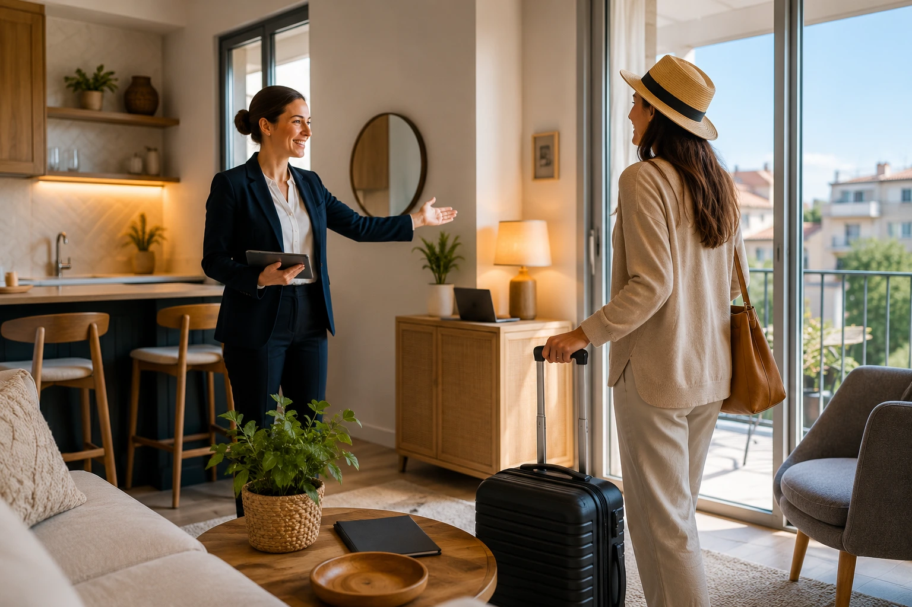
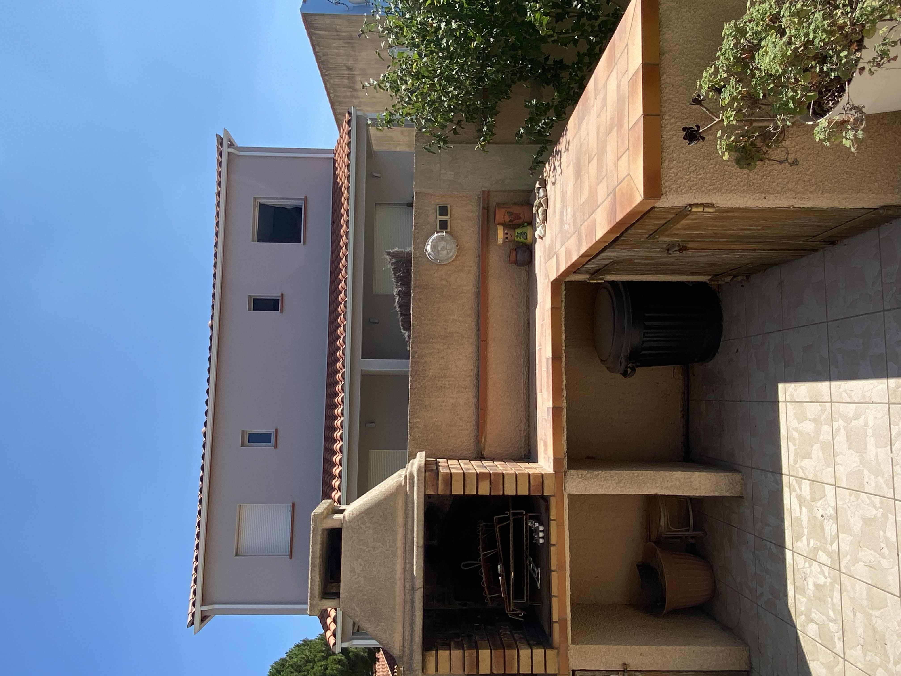

Location saisonnière et résidence secondaire : les guides d'Inès
Des méthodes concrètes pour préparer un logement, accueillir avec soin et déléguer sans perdre le contrôle.
Des réponses fondées sur le travail réel
Ces guides sont écrits et vérifiés par Inès Darges. Ils traduisent les contrôles, réflexes et documents utilisés lors de missions dans les Pyrénées-Orientales. Ils sont mis à jour lorsque les pratiques ou les règles évoluent.

Préparer un logement pour la location saisonnière
Équipement, sécurité, inventaire et premiers tests : la méthode avant de publier une annonce.
Lire le guide →
Ce qu'une conciergerie gère réellement
Avant, pendant et après le séjour : qui fait quoi, comment les incidents sont suivis et ce que conserve le propriétaire.
Lire le guide →
Check-in, check-out et ménage : le protocole
Une séquence reproductible pour éviter les oublis et remettre un logement vraiment prêt à accueillir.
Lire le guide →
Gestion autonome ou conciergerie ?
Temps, coûts, responsabilités et disponibilité : une grille honnête pour choisir le bon niveau de délégation.
Lire le guide →
Surveiller une résidence secondaire pendant une absence
Fermeture, passages de contrôle, intempéries et remise en service : les points qui évitent les mauvaises surprises.
Lire le guide →Créer un livret d'accueil vraiment utile
Accès, logement, départ et repères locaux : les informations à transmettre sans noyer les voyageurs.
Lire le guide →Une autrice identifiée
Chaque contenu porte la signature d'Inès, son expérience et sa date de révision.
Des exemples anonymisés
Les situations illustrent des missions réelles sans exposer les clients ni leur logement.
Des sources vérifiables
Les informations réglementaires renvoient vers les organismes publics compétents.
Un besoin concret pour votre logement ?
Inès étudie votre organisation actuelle et vous propose uniquement le niveau d'accompagnement utile.